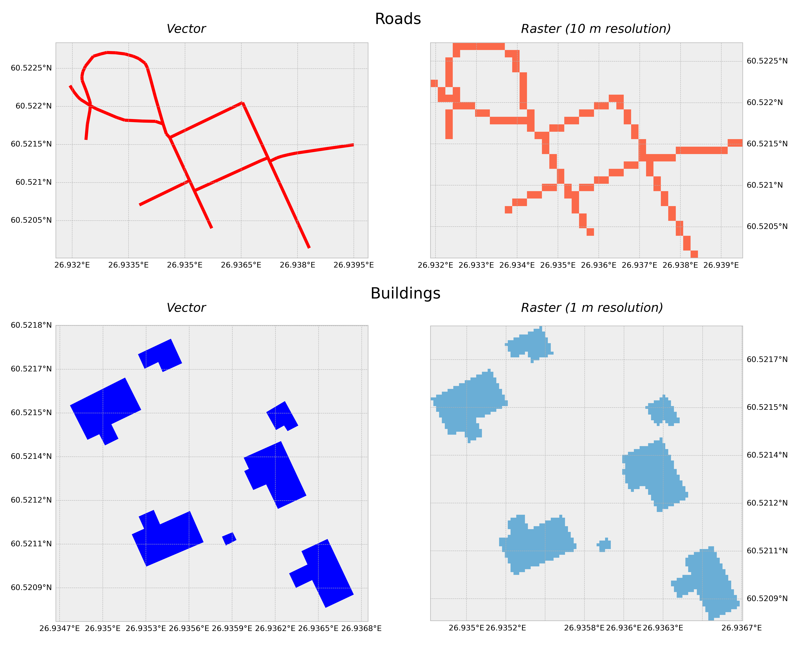
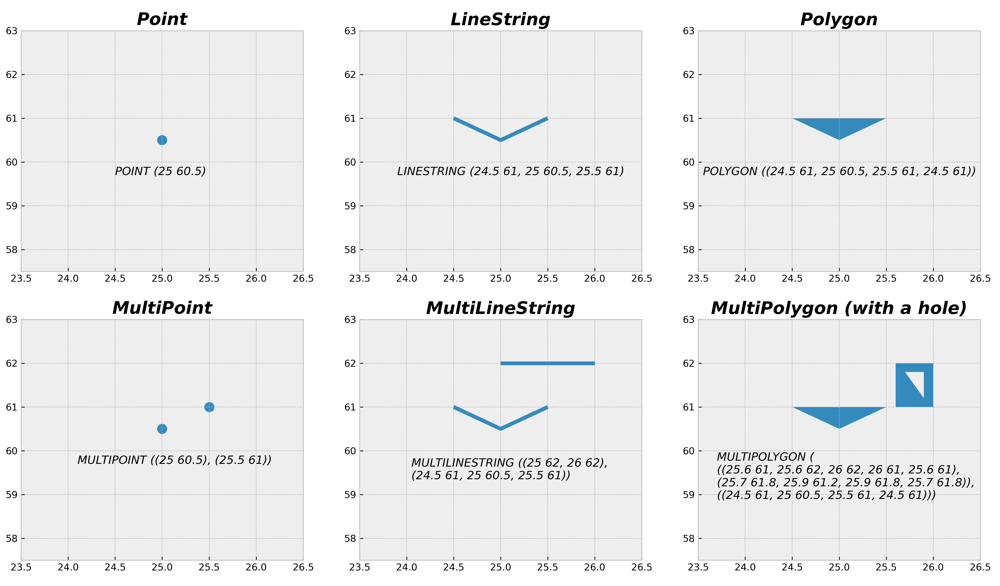
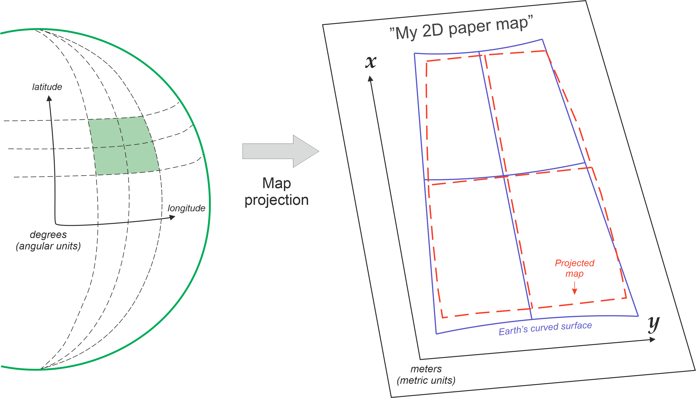

Python para Análise de Dados Geográficos
Visão geral
Esta aula será dividida em três partes:
- Conceitos básicos de Python
- Introdução à análise de dados com Python
- Introdução aos dados geográficos com Python
- Manipulação de dados geográficos com Python
Conceitos básicos de Python
Por que usar programação para análise de dados geográficos?
- Automatização de tarefas repetitivas
- Manipulação de grandes volumes de dados
- Reprodutibilidade dos resultados
- Preservação do histórico de operações
Por que usar Python para análise de dados geográficos?
- Gratuito e de código aberto
- Python é amigável para iniciantes
- Ampla utilização no ecossistema de análise de dados
- Grande interface com ferramentas e bibliotecas de análise de dados geográficos
Variáveis e tipos de dados
Variáveis e tipos de dados
Listas
Listas - Acessando elementos
Listas - Operações básicas: adicionar
Listas - Operações básicas: invertendo a ordem
Listas - Operações básicas: ordenando os elementos
Laços - for
Laços - for
---------------------------------------------------------------------------
IndexError Traceback (most recent call last)
Cell In[35], line 2
1 # Exemplo pior
----> 2 print(distritos_sp[6])
IndexError: list index out of rangeLaços - for
Declaração Condicional - if
Declaração Condicional - if
Declaração Condicional - if
Funções
Análise de dados com Python
Tabelas
Abrindo tabelas com Python
import pandas as pd
# Lendo a tabela diretamente da Wikipedia
url = "https://pt.wikipedia.org/wiki/Lista_dos_distritos_de_S%C3%A3o_Paulo_por_popula%C3%A7%C3%A3o"
# Configuração de headers para evitar bloqueio por parte do servidor
headers = {"User-Agent": "Chrome/120.0.0.0"}
tabela = pd.read_html(url, header=0, storage_options=headers)[1]
tabela.head(2) # Exibe as primeiras linhas da tabela| Unnamed: 0 | Distrito | Pop. Total 2022 | Pop. Urb. 2022 | |
|---|---|---|---|---|
| 0 | 1º | Grajaú | 384873 | 382897 |
| 1 | 2º | Jardim Ângela | 311432 | 311329 |
Selecionando linhas
Selecionando linhas
Selecionando linhas
Selecionando linhas
Selecionando linhas
Selecionando linhas
Selecionando colunas
Selecionando colunas
Calculando estatísticas básicas
Calculando estatísticas básicas
Filtrando dados
# Filtrando os distritos com população total maior que 100.000
filtro = tabela["Pop. Total 2022"] > 100000
tabela[filtro].head(4)| Unnamed: 0 | Distrito | Pop. Total 2022 | Pop. Urb. 2022 | |
|---|---|---|---|---|
| 7 | 8º | Brasilândia | 243273 | 243261 |
| 24 | 25º | Cachoeirinha | 143366 | 143366 |
| 40 | 41º | Campo Grande | 115925 | 115925 |
| 8 | 9º | Campo Limpo | 236162 | 236162 |
Filtrando dados
# Filtrando os distritos com população total diferente da população urbana
filtro = tabela["Pop. Total 2022"] != tabela["Pop. Urb. 2022"]
tabela[filtro].head(4)| Unnamed: 0 | Distrito | Pop. Total 2022 | Pop. Urb. 2022 | |
|---|---|---|---|---|
| 72 | 73º | Anhanguera | 75360 | 75061 |
| 7 | 8º | Brasilândia | 243273 | 243261 |
| 15 | 16º | Cidade Dutra | 182459 | 182438 |
| 14 | 15º | Cidade Tiradentes | 194177 | 194160 |
Criando novas colunas
# Criando uma nova coluna de População Rural
tabela["Pop. Rural 2022"] = tabela["Pop. Total 2022"] - tabela["Pop. Urb. 2022"]
tabela.head(4)| Unnamed: 0 | Distrito | Pop. Total 2022 | Pop. Urb. 2022 | Pop. Rural 2022 | |
|---|---|---|---|---|---|
| 89 | 90º | Alto de Pinheiros | 37359 | 37359 | 0 |
| 72 | 73º | Anhanguera | 75360 | 75061 | 299 |
| 57 | 58º | Aricanduva | 89574 | 89574 | 0 |
| 54 | 55º | Artur Alvim | 95575 | 95575 | 0 |
Criando novas colunas
Criando novas colunas
# Criando uma nova coluna de percentual de população rural
tabela["% Pop. Rural 2022"] = 100 * tabela["Pop. Rural 2022"] / tabela["Pop. Total 2022"]
tabela.sort_values("% Pop. Rural 2022", ascending=False).head(4)| Unnamed: 0 | Distrito | Pop. Total 2022 | Pop. Urb. 2022 | Pop. Rural 2022 | % Pop. Rural 2022 | |
|---|---|---|---|---|---|---|
| 95 | 96º | Marsilac | 11451 | 6652 | 4799 | 41.909004 |
| 21 | 22º | Parelheiros | 153687 | 145558 | 8129 | 5.289322 |
| 0 | 1º | Grajaú | 384873 | 382897 | 1976 | 0.513416 |
| 59 | 60º | Perus | 87716 | 87280 | 436 | 0.497059 |
Renomeando colunas
| Posto | Distrito | Pop. Total 2022 | Pop. Urb. 2022 | Pop. Rural 2022 | % Pop. Rural 2022 | |
|---|---|---|---|---|---|---|
| 89 | 90º | Alto de Pinheiros | 37359 | 37359 | 0 | 0.000000 |
| 72 | 73º | Anhanguera | 75360 | 75061 | 299 | 0.396762 |
| 57 | 58º | Aricanduva | 89574 | 89574 | 0 | 0.000000 |
| 54 | 55º | Artur Alvim | 95575 | 95575 | 0 | 0.000000 |
Renomeando colunas
# Criando coluna para os 10 distritos mais populosos
tabela["Posto_numerico"] = tabela["Posto"].str.rstrip(".º").astype(int)
tabela.sort_values("Posto_numerico", inplace=True)
tabela.head(4)| Posto | Distrito | Pop. Total 2022 | Pop. Urb. 2022 | Pop. Rural 2022 | % Pop. Rural 2022 | Posto_numerico | |
|---|---|---|---|---|---|---|---|
| 0 | 1º | Grajaú | 384873 | 382897 | 1976 | 0.513416 | 1 |
| 1 | 2º | Jardim Ângela | 311432 | 311329 | 103 | 0.033073 | 2 |
| 2 | 3º | Capão Redondo | 270767 | 270767 | 0 | 0.000000 | 3 |
| 3 | 4º | Sapopemba | 266715 | 266715 | 0 | 0.000000 | 4 |
Renomeando colunas
# Criando coluna para os 10 distritos mais populosos
tabela["Dez mais populosos"] = tabela["Posto_numerico"] <= 10
tabela.head(4)| Posto | Distrito | Pop. Total 2022 | Pop. Urb. 2022 | Pop. Rural 2022 | % Pop. Rural 2022 | Posto_numerico | Dez mais populosos | |
|---|---|---|---|---|---|---|---|---|
| 0 | 1º | Grajaú | 384873 | 382897 | 1976 | 0.513416 | 1 | True |
| 1 | 2º | Jardim Ângela | 311432 | 311329 | 103 | 0.033073 | 2 | True |
| 2 | 3º | Capão Redondo | 270767 | 270767 | 0 | 0.000000 | 3 | True |
| 3 | 4º | Sapopemba | 266715 | 266715 | 0 | 0.000000 | 4 | True |
Agrupando e agregando dados
Agrupando e agregando dados
Juntando tabelas
# Carregando dados de escolas
url_escolas = "https://dados.prefeitura.sp.gov.br/dataset/8da55b0e-b385-4b54-9296-d0000014ddd5/resource/a12ad63d-d944-4e35-9aac-71a5ae0b7bdf/download/escolas122022.csv"
escolas = pd.read_csv(url_escolas, sep=";", encoding="latin1")
escolas.head(4)| DRE | CODESC | TIPOESC | NOMES | NOMESCOFI | CEU | DIRETORIA | SUBPREF | ENDERECO | NUMERO | ... | ATO_CRIACAO | DOM_CRIACAO | DT_INI_CONV | DT_AUTORIZA | DT_EXTINCAO | NOME_ANT | REDE | LATITUDE | LONGITUDE | DATABASE | |
|---|---|---|---|---|---|---|---|---|---|---|---|---|---|---|---|---|---|---|---|---|---|
| 0 | BT | 307207 | ESC.PART. | A HEBRAICA | A HEBRAICA | NaN | BUTANTA | PINHEIROS | RUA HUNGRIA | 1000 | ... | 3 | 01/02/2010 | NaN | 06/fev/10 | NaN | NaN | PAR | -23578930 | -46694078 | 31/12/2022 |
| 1 | BT | 307412 | ESC.PART. | ABCD SOFIA | ABCD SOFIA | NaN | BUTANTA | BUTANTA | RUA OTÁVIO PEDREIRO ROSA | 212 | ... | 62 | 10/11/2010 | NaN | 12/nov/10 | NaN | NaN | PAR | -23583388 | -46760545 | 31/12/2022 |
| 2 | BT | 307131 | ESC.PART. | ACONCHEGO, ESCOLA | ACONCHEGO, ESCOLA | NaN | BUTANTA | BUTANTA | RUA QUITANDUBA | 50 | ... | 85 | 21/08/2009 | NaN | NaN | NaN | NaN | PAR | -23583061 | -46715523 | 31/12/2022 |
| 3 | BT | 400003 | CEI DIRET | ALOYSIO DE MENEZES GREENHALGH, VER. | ALOYSIO DE MENEZES GREENHALGH, VER. | NaN | BUTANTA | BUTANTA | RUA DOUTOR FRANCISCO PATI | 375 | ... | 24.765 | 16/10/1987 | NaN | 22/mai/07 | NaN | VILA SAO FRANCISCO | DIR | -23557659 | -46759414 | 31/12/2022 |
4 rows × 34 columns
Juntando tabelas
Juntando tabelas
Juntando tabelas
Juntando tabelas
# Normalizando os nomes dos distritos para a junção
tabela['DISTRITO'] = tabela['Distrito'].str.upper()
tabela.head(4)| Posto | Distrito | Pop. Total 2022 | Pop. Urb. 2022 | Pop. Rural 2022 | % Pop. Rural 2022 | Posto_numerico | Dez mais populosos | DISTRITO | |
|---|---|---|---|---|---|---|---|---|---|
| 0 | 1º | Grajaú | 384873 | 382897 | 1976 | 0.513416 | 1 | True | GRAJAÚ |
| 1 | 2º | Jardim Ângela | 311432 | 311329 | 103 | 0.033073 | 2 | True | JARDIM ÂNGELA |
| 2 | 3º | Capão Redondo | 270767 | 270767 | 0 | 0.000000 | 3 | True | CAPÃO REDONDO |
| 3 | 4º | Sapopemba | 266715 | 266715 | 0 | 0.000000 | 4 | True | SAPOPEMBA |
Juntando tabelas
from unidecode import unidecode
# Normalizando os nomes dos distritos para a junção
tabela['DISTRITO'] = tabela['DISTRITO'].apply(unidecode)
tabela.head(4)| Posto | Distrito | Pop. Total 2022 | Pop. Urb. 2022 | Pop. Rural 2022 | % Pop. Rural 2022 | Posto_numerico | Dez mais populosos | DISTRITO | |
|---|---|---|---|---|---|---|---|---|---|
| 0 | 1º | Grajaú | 384873 | 382897 | 1976 | 0.513416 | 1 | True | GRAJAU |
| 1 | 2º | Jardim Ângela | 311432 | 311329 | 103 | 0.033073 | 2 | True | JARDIM ANGELA |
| 2 | 3º | Capão Redondo | 270767 | 270767 | 0 | 0.000000 | 3 | True | CAPAO REDONDO |
| 3 | 4º | Sapopemba | 266715 | 266715 | 0 | 0.000000 | 4 | True | SAPOPEMBA |
Juntando tabelas
# Juntando as tabelas de população e escolas pelo nome do distrito
tabela_juntada = tabela.merge(escolas_distrito, on="DISTRITO", how="left")
tabela_juntada.head(4)| Posto | Distrito | Pop. Total 2022 | Pop. Urb. 2022 | Pop. Rural 2022 | % Pop. Rural 2022 | Posto_numerico | Dez mais populosos | DISTRITO | Número de Escolas | |
|---|---|---|---|---|---|---|---|---|---|---|
| 0 | 1º | Grajaú | 384873 | 382897 | 1976 | 0.513416 | 1 | True | GRAJAU | 144 |
| 1 | 2º | Jardim Ângela | 311432 | 311329 | 103 | 0.033073 | 2 | True | JARDIM ANGELA | 153 |
| 2 | 3º | Capão Redondo | 270767 | 270767 | 0 | 0.000000 | 3 | True | CAPAO REDONDO | 139 |
| 3 | 4º | Sapopemba | 266715 | 266715 | 0 | 0.000000 | 4 | True | SAPOPEMBA | 110 |
Dados geográficos com Python
Tipos de representação de dados geográficos

Representações vetoriais e raster de ruas e edifícios. Fonte: Tenkanen, Heikinheimo, and Whipp (2025).
Tipos de geometrias

Modelo de dados vetoriais seguindo a Simple Features Access Specification (ISO 19125-1). Fonte: Tenkanen, Heikinheimo, and Whipp (2025).
Formatos de arquivos de dados geográficos
- Shapefile: Formato popular para dados vetoriais, suportado por muitos sistemas de informação geográfica (SIG). Possui uma estrutura de arquivos múltiplos (.shp, .shx, .dbf) que armazenam diferentes aspectos dos dados e algumas limitações associadas à época de desenvolvimento do formato.
- GeoJSON: Formato aberto baseado em JSON para representar dados geográficos, amplamente utilizado em aplicações web. Porém, por ser baseado em texto, pode ser menos eficiente para grandes volumes de dados em comparação com formatos binários.
- GeoPackage (GPKG): Formato aberto de arquivo de banco de dados SQLite para dados geoespaciais, suportando tanto dados vetoriais quanto raster, além de suportar várias camadas em um único arquivo.
- GeoParquet: Formato de arquivo baseado em Parquet para dados geoespaciais, projetado para ser eficiente em termos de armazenamento e desempenho, especialmente para grandes volumes de dados. Ele é otimizado para leitura e escrita rápida de todos os registros, tornando-o adequado para análise de dados geográficos em larga escala.
- KML: Menos utilizado do que os outros formatos no mundo do python, é um formato XML usado para representar dados geográficos em aplicativos como Google Earth.
Sistemas de referência de coordenadas (CRS)
Possui tipicamente três componentes principais:
- Datum: Referência geodésica que relaciona o sistema de coordenadas com a superfície da Terra. É o que define o tamanho e a forma da Terra, como uma esfera, um elipsóide ou um geoide. Além disso, o datum define a posição do sistema de coordenadas em relação à Terra.
- Projeção: Método utilizado para representar a superfície curva da Terra em um plano. Existem várias projeções, cada uma com suas próprias distorções e usos específicos.
- Parâmetros adicionais: Informações que podem ser usadas para ajustar a representação dos dados geográficos, como a escala e o meridiano central.
Observação: existem sistemas de referência de coordenadas sem projeção, chamados de sistemas de coordenadas geográficas, que utilizam latitude e longitude para representar a localização na superfície da Terra.
Projeção de dados geográficos

Representações bidimensionais de dados geográficos sempre causam algum grau de distorção. Fonte: Tenkanen, Heikinheimo, and Whipp (2025).
Porém, diversas operações de análise de dados geográficos exigem que os dados estejam em um sistema de referência de coordenadas projetado e, em caso de múltiplas tabelas de dados geográficos, é necessário que todas estejam no mesmo sistema de referência de coordenadas.
Representação de dados geográficos em Python - Pontos

Representação de dados geográficos em Python - Linhas

Representação de dados geográficos em Python - Polígonos

Representação de dados geográficos em Python - Geometrias complexas

Tabelas de dados geográficos em Python - GeoDataFrames
import geopandas as gpd
# url_geojson = "https://wfs.geosampa.prefeitura.sp.gov.br/geoserver/ows?service=WFS&version=2.0.0&request=GetFeature&typeNames=geoportal:ponto_onibus&outputFormat=application/json"
url_geojson = "https://wfs.geosampa.prefeitura.sp.gov.br/geoserver/ows?service=WFS&version=2.0.0&request=GetFeature&typeNames=geoportal:area_risco_geologico&outputFormat=application/json"
# O GeoPandas consegue ler a URL WFS diretamente
areas_risco = gpd.read_file(url_geojson)
# Exibe as primeiras linhas da tabela com a geometria
areas_risco.head()| id | cd_identificador | nm_area_risco | tx_grau_de_risco_geologico | sg_area_risco | sg_setor_risco | tx_tipo_processo_geologico | cd_tipo_processo_geologico | cd_grau_risco_geologico | dt_atualizacao | dt_vistoria | sg_fonte_original | qt_moradia | geometry | |
|---|---|---|---|---|---|---|---|---|---|---|---|---|---|---|
| 0 | area_risco_geologico.1 | 1 | AVENIDA SANTO AFONSO I | AREA ENCERRADA | AD-01 | AREA ENCERRADA | ESCORREGAMENTO | 2 | 99 | 2026-03-01 03:00:00+00:00 | 2022-02-02 | 18 | 0 | POLYGON ((332306.817 7380115.28, 332246.187 73... |
| 1 | area_risco_geologico.1305 | 1305 | JARDIM VILA CARRAO | r1 | SM-14 | SM-14-01 (R1) | SOLAPAMENTO | 4 | 1 | 2026-03-01 03:00:00+00:00 | 2023-06-22 | 18 | 100 | POLYGON ((351497.518 7388450.837, 351478.481 7... |
| 2 | area_risco_geologico.1306 | 1306 | KAEI KAWAHIRA | r2 | SM-29 | SM-29-01 (R2) | ESCORREGAMENTO/SOLAPAMENTO | 3 | 2 | 2026-03-01 03:00:00+00:00 | 2025-11-05 | 18 | 255 | POLYGON ((351954.344 7384928.795, 351967.362 7... |
| 3 | area_risco_geologico.1307 | 1307 | KAEI KAWAHIRA | r3 | SM-29 | SM-29-02 (R3) | ESCORREGAMENTO | 2 | 3 | 2026-03-01 03:00:00+00:00 | 2025-11-05 | 18 | 135 | POLYGON ((351951.632 7385012.975, 351983.62 73... |
| 4 | area_risco_geologico.1308 | 1308 | KAEI KAWAHIRA | r3 | SM-29 | SM-29-03 (R3) | ESCORREGAMENTO | 2 | 3 | 2026-03-01 03:00:00+00:00 | 2025-11-05 | 18 | 15 | POLYGON ((352008.391 7385293.097, 352017.473 7... |
Calculando estatísticas básicas com dados geográficos
# Calculando o número de áreas de risco geológico
num_areas_risco = areas_risco["geometry"].count()
print(f"O número de áreas de risco geológico é: {num_areas_risco}")
# Calculando a média de moradias em áreas de risco geológico
media_moradias = areas_risco["qt_moradia"].mean()
print(f"A média de moradias em áreas de risco geológico é: {media_moradias:.0f}")O número de áreas de risco geológico é: 1385
A média de moradias em áreas de risco geológico é: 139Agrupando e agregando dados geográficos
Filtrando e agregando dados geográficos
# Filtrando apenas as áreas de escorregamento
filtro = areas_risco["tx_tipo_processo_geologico"] == "ESCORREGAMENTO"
areas_escorregamento = areas_risco[filtro]
areas_escorregamento.groupby("tx_grau_de_risco_geologico")[["qt_moradia"]].sum()| qt_moradia | |
|---|---|
| tx_grau_de_risco_geologico | |
| AREA ENCERRADA | 0 |
| r1 | 28684 |
| r2 | 74566 |
| r3 | 19914 |
| r4 | 6681 |
Juntando tabelas de dados geográficos
url_geojson = "https://wfs.geosampa.prefeitura.sp.gov.br/geoserver/ows?service=WFS&version=2.0.0&request=GetFeature&typeNames=geoportal:ponto_onibus&outputFormat=application/json"
# O GeoPandas consegue ler a URL WFS diretamente
pontos_onibus = gpd.read_file(url_geojson)
# Exibe as primeiras linhas da tabela com a geometria
pontos_onibus.head()| id | cd_identificador_ponto_onibus | sg_fonte_original | nm_ponto_onibus | tx_endereco_ponto_onibus | tx_descricao_ponto_onibus | geometry | |
|---|---|---|---|---|---|---|---|
| 0 | ponto_onibus.fid-21fc7e6_19cb1bfdd91_-ef | 770007703 | 22 | AV. BSA. DE MURITIBA , 478 | CLEMENTE FALCAO/ R JOAO DO CANTO E MELO | R CLEMENTE FALCAO/ R JOAO DO CANTO E MELO | POINT (349959.736 7386292.476) |
| 1 | ponto_onibus.fid-21fc7e6_19cb1bfdd91_-ee | 510001729 | 22 | PÇA. RUFUS KING LANE , 40 | RUFUS KING LANE/ TV ELZA | R RUFUS KING LANE/ TV ELZA | POINT (334215.356 7402575.964) |
| 2 | ponto_onibus.fid-21fc7e6_19cb1bfdd91_-ed | 600005106 | 22 | R. WADIH HATTI , 364 | MARCIANO CAPELLA/ AV ANTONIO DIOGO | R MARCIANO CAPELLA/ AV ANTONIO DIOGO | POINT (347433.761 7397131.971) |
| 3 | ponto_onibus.fid-21fc7e6_19cb1bfdd91_-ec | 5808146 | 22 | R. SUÍTE DE NATAL , 1294 | UA MALMEQUER DO CAMPO / UBS | RUA MALMEQUER DO CAMPO / UBS | POINT (352152.405 7391144.968) |
| 4 | ponto_onibus.fid-21fc7e6_19cb1bfdd91_-eb | 890004800 | 22 | ESTR. DO IMPERADOR , 5451 | FRESIA/ R DAS AMENDOEIRAS | R FRESIA/ R DAS AMENDOEIRAS | POINT (351862.188 7398844.214) |
Juntando tabelas de dados geográficos

Juntando tabelas de dados geográficos
# Carregando dados de distritos
url_distritos = "https://wfs.geosampa.prefeitura.sp.gov.br/geoserver/ows?service=WFS&version=2.0.0&request=GetFeature&typeNames=geoportal:distrito_municipal&outputFormat=application/json"
distritos = gpd.read_file(url_distritos)
distritos.head(4)| id | cd_identificador_distrito | cd_identificador_subprefeitura | cd_distrito_municipal | nm_distrito_municipal | sg_distrito_municipal | tx_escala | sg_fonte_original | dt_criacao | dt_atualizacao | cd_usuario_atualizacao | cd_tipo_discrepancia | qt_area_quilometro | qt_area_metro | geometry | |
|---|---|---|---|---|---|---|---|---|---|---|---|---|---|---|---|
| 0 | distrito_municipal.8583465 | 8583465 | 31 | 25 | CIDADE TIRADENTES | CTI | 1:5000 | GEOGSG | 2004-01-01 | 2025-07-05 03:54:16.745000+00:00 | None | 199299399 | 14.939 | 14939046.96 | POLYGON ((357428.688 7387653.528, 357433.497 7... |
| 1 | distrito_municipal.8583484 | 8583484 | 18 | 46 | JARDIM SAO LUIS | JDS | 1:5000 | GEOGSG | 2004-01-01 | 2025-07-05 03:54:16.750000+00:00 | None | 199299399 | 26.048 | 26047652.36 | POLYGON ((321618.419 7377778.152, 321559.629 7... |
| 2 | distrito_municipal.8583488 | 8583488 | 9 | 49 | LIBERDADE | LIB | 1:5000 | GEOGSG | 2004-01-01 | 2025-07-05 03:54:16.758000+00:00 | None | 199299399 | 3.651 | 3651129.57 | POLYGON ((332504.515 7392094.984, 332505.952 7... |
| 3 | distrito_municipal.8583453 | 8583453 | 4 | 13 | CACHOEIRINHA | CAC | 1:5000 | GEOGSG | 2004-01-01 | 2025-07-05 03:54:16.773000+00:00 | None | 199299399 | 13.572 | 13571736.73 | POLYGON ((330933.585 7402181.544, 330910.867 7... |

Juntando tabelas de dados geográficos
Juntando tabelas de dados geográficos
# Selecionando apenas algumas colunas dos distritos para a junção
colunas_selecionadas = ["nm_distrito_municipal", "geometry"]
# Juntando os pontos de ônibus com os distritos
pontos_onibus_distritos = pontos_onibus.sjoin(distritos[colunas_selecionadas], how="left", predicate="within")
pontos_onibus_distritos.head(4)| id | cd_identificador_ponto_onibus | sg_fonte_original | nm_ponto_onibus | tx_endereco_ponto_onibus | tx_descricao_ponto_onibus | geometry | index_right | nm_distrito_municipal | |
|---|---|---|---|---|---|---|---|---|---|
| 0 | ponto_onibus.fid-21fc7e6_19cb1bfdd91_-ef | 770007703 | 22 | AV. BSA. DE MURITIBA , 478 | CLEMENTE FALCAO/ R JOAO DO CANTO E MELO | R CLEMENTE FALCAO/ R JOAO DO CANTO E MELO | POINT (349959.736 7386292.476) | 67.0 | SAO RAFAEL |
| 1 | ponto_onibus.fid-21fc7e6_19cb1bfdd91_-ee | 510001729 | 22 | PÇA. RUFUS KING LANE , 40 | RUFUS KING LANE/ TV ELZA | R RUFUS KING LANE/ TV ELZA | POINT (334215.356 7402575.964) | 89.0 | MANDAQUI |
| 2 | ponto_onibus.fid-21fc7e6_19cb1bfdd91_-ed | 600005106 | 22 | R. WADIH HATTI , 364 | MARCIANO CAPELLA/ AV ANTONIO DIOGO | R MARCIANO CAPELLA/ AV ANTONIO DIOGO | POINT (347433.761 7397131.971) | 61.0 | PENHA |
| 3 | ponto_onibus.fid-21fc7e6_19cb1bfdd91_-ec | 5808146 | 22 | R. SUÍTE DE NATAL , 1294 | UA MALMEQUER DO CAMPO / UBS | RUA MALMEQUER DO CAMPO / UBS | POINT (352152.405 7391144.968) | 77.0 | PARQUE DO CARMO |
Juntando tabelas de dados geográficos
# Contando o número de pontos de ônibus por distrito
pontos_por_distrito = pontos_onibus_distritos\
.groupby("nm_distrito_municipal")\
.size()\
.reset_index(name="Número de Pontos de Ônibus")
pontos_por_distrito.head(4)| nm_distrito_municipal | Número de Pontos de Ônibus | |
|---|---|---|
| 0 | AGUA RASA | 164 |
| 1 | ALTO DE PINHEIROS | 119 |
| 2 | ANHANGUERA | 188 |
| 3 | ARICANDUVA | 163 |
Juntando tabelas
# Juntando a tabela de pontos de ônibus por distrito com a tabela inicial
pontos_por_distrito.rename(columns={"nm_distrito_municipal": "DISTRITO"},
inplace=True)
tabela_distritos = tabela.merge(pontos_por_distrito)
tabela_distritos.head(4)| Posto | Distrito | Pop. Total 2022 | Pop. Urb. 2022 | Pop. Rural 2022 | % Pop. Rural 2022 | Posto_numerico | Dez mais populosos | DISTRITO | Número de Pontos de Ônibus | |
|---|---|---|---|---|---|---|---|---|---|---|
| 0 | 1º | Grajaú | 384873 | 382897 | 1976 | 0.513416 | 1 | True | GRAJAU | 613 |
| 1 | 2º | Jardim Ângela | 311432 | 311329 | 103 | 0.033073 | 2 | True | JARDIM ANGELA | 450 |
| 2 | 3º | Capão Redondo | 270767 | 270767 | 0 | 0.000000 | 3 | True | CAPAO REDONDO | 403 |
| 3 | 4º | Sapopemba | 266715 | 266715 | 0 | 0.000000 | 4 | True | SAPOPEMBA | 391 |
Juntando tabelas
# calculando o número de pontos de ônibus por 100.000 habitantes
tabela_distritos["Pontos de Ônibus por 100.000 habitantes"] = 100000 * tabela_distritos["Número de Pontos de Ônibus"] / tabela_distritos["Pop. Total 2022"]
tabela_distritos.head(4)| Posto | Distrito | Pop. Total 2022 | Pop. Urb. 2022 | Pop. Rural 2022 | % Pop. Rural 2022 | Posto_numerico | Dez mais populosos | DISTRITO | Número de Pontos de Ônibus | Pontos de Ônibus por 100.000 habitantes | |
|---|---|---|---|---|---|---|---|---|---|---|---|
| 0 | 1º | Grajaú | 384873 | 382897 | 1976 | 0.513416 | 1 | True | GRAJAU | 613 | 159.273319 |
| 1 | 2º | Jardim Ângela | 311432 | 311329 | 103 | 0.033073 | 2 | True | JARDIM ANGELA | 450 | 144.493822 |
| 2 | 3º | Capão Redondo | 270767 | 270767 | 0 | 0.000000 | 3 | True | CAPAO REDONDO | 403 | 148.836453 |
| 3 | 4º | Sapopemba | 266715 | 266715 | 0 | 0.000000 | 4 | True | SAPOPEMBA | 391 | 146.598429 |
BÔNUS: Visualização de dados geográficos com Python
Voltando os dados de pontos de ônibus para o formato geográfico
distritos.rename(columns={"nm_distrito_municipal": "DISTRITO"},
inplace=True)
distritos_com_pontos = distritos.merge(tabela_distritos[["Pontos de Ônibus por 100.000 habitantes", "DISTRITO"]])
distritos_com_pontos.head(4)| id | cd_identificador_distrito | cd_identificador_subprefeitura | cd_distrito_municipal | DISTRITO | sg_distrito_municipal | tx_escala | sg_fonte_original | dt_criacao | dt_atualizacao | cd_usuario_atualizacao | cd_tipo_discrepancia | qt_area_quilometro | qt_area_metro | geometry | Pontos de Ônibus por 100.000 habitantes | |
|---|---|---|---|---|---|---|---|---|---|---|---|---|---|---|---|---|
| 0 | distrito_municipal.8583465 | 8583465 | 31 | 25 | CIDADE TIRADENTES | CTI | 1:5000 | GEOGSG | 2004-01-01 | 2025-07-05 03:54:16.745000+00:00 | None | 199299399 | 14.939 | 14939046.96 | POLYGON ((357428.688 7387653.528, 357433.497 7... | 207.027609 |
| 1 | distrito_municipal.8583484 | 8583484 | 18 | 46 | JARDIM SAO LUIS | JDS | 1:5000 | GEOGSG | 2004-01-01 | 2025-07-05 03:54:16.750000+00:00 | None | 199299399 | 26.048 | 26047652.36 | POLYGON ((321618.419 7377778.152, 321559.629 7... | 166.938472 |
| 2 | distrito_municipal.8583488 | 8583488 | 9 | 49 | LIBERDADE | LIB | 1:5000 | GEOGSG | 2004-01-01 | 2025-07-05 03:54:16.758000+00:00 | None | 199299399 | 3.651 | 3651129.57 | POLYGON ((332504.515 7392094.984, 332505.952 7... | 158.956037 |
| 3 | distrito_municipal.8583453 | 8583453 | 4 | 13 | CACHOEIRINHA | CAC | 1:5000 | GEOGSG | 2004-01-01 | 2025-07-05 03:54:16.773000+00:00 | None | 199299399 | 13.572 | 13571736.73 | POLYGON ((330933.585 7402181.544, 330910.867 7... | 188.329171 |
<Figure size 960x960 with 0 Axes>